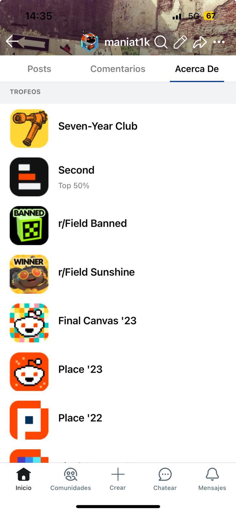

~ bitácora.log/2025-05-05-Reddit █
> Me puse a jugar con Reddit. ¿Cuál es la meta?
$ Sobre la meta...
Básicamente quiero desbloquear todos los logros que Reddit ofrece en su nuevo sistema de hitos, que descubrí hace poco en mi perfil.
"Construir comunidad":
- Catedrático de contenidos: Votar al menos cinco veces al día en la misma comunidad durante 30 días. Aún no lo saqué, pero parece sencillo.
- Estrella emergente: Obtener 1000 upvotes durante tu primer mes en una comunidad. Este parece más difícil, pero vamos a intentarlo.
- Así soy yo: Establecí la etiqueta de usuario en una comunidad. ¡Con este me di cuenta de que ya estaba metido en esto de los logros!
- 25% de más votados: Estuve entre el 25% con más comentarios. No está nada mal, ¿eh?
- 10% de más votados: Otro desbloqueado. Parece que estuve bastante activo.
- 5% de más votados: También lo desbloqueé. Se ve que estuve on fire en esa época.
- 1% de más votados: ¡Este es épico! Me sorprendió mucho tenerlo. No creo que lo tenga mucha gente.
Todo este desarrollo está hecho 100% con HTML, CSS y JS, sin frameworks. También agregué una gráfica con Chart.js para visualizar el progreso del ahorro. Todo corre directamente desde GitHub Pages.
La idea es ir desbloqueando logro tras logro. A diferencia de la vitrina, estos logros tienen objetivos claros y alcanzables.
$ La vitrina...
